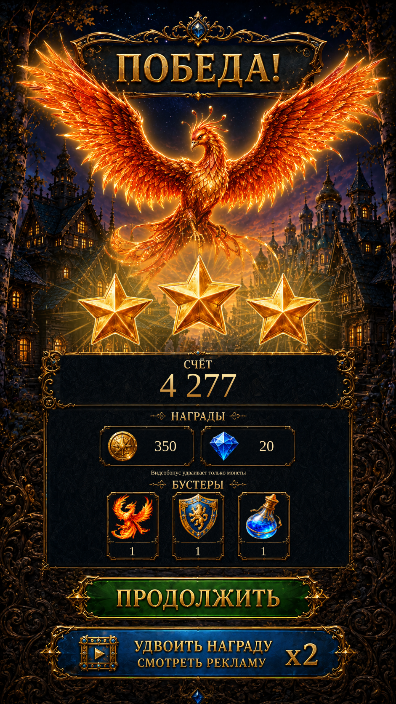

Victory · rewards and typography R2Victory · rewards and typography R2
Continuous repaired panel faces replace repeated patches. Original heading ornaments and quantity dividers are restored, with compact resource cards, taller booster cards and original Russian title/button lettering. Firebird bloom and wider earned-star rays restore the celebration glow.
Native views are actual Unity captures with isolated test saves. Reference amounts and unsupported sample items are not granted. The bonus fixture tests the reward domain; it is not a successful live ad.
